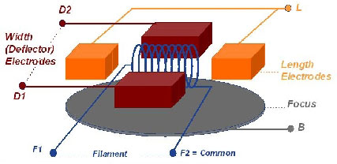
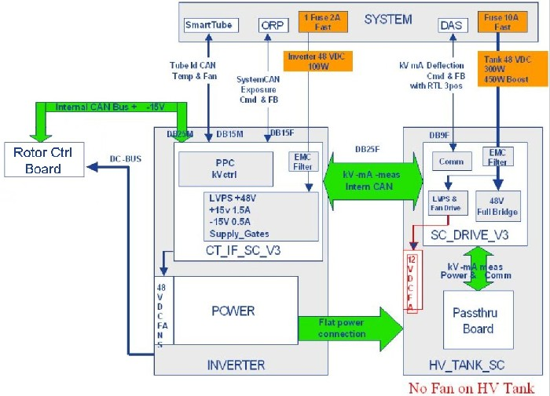
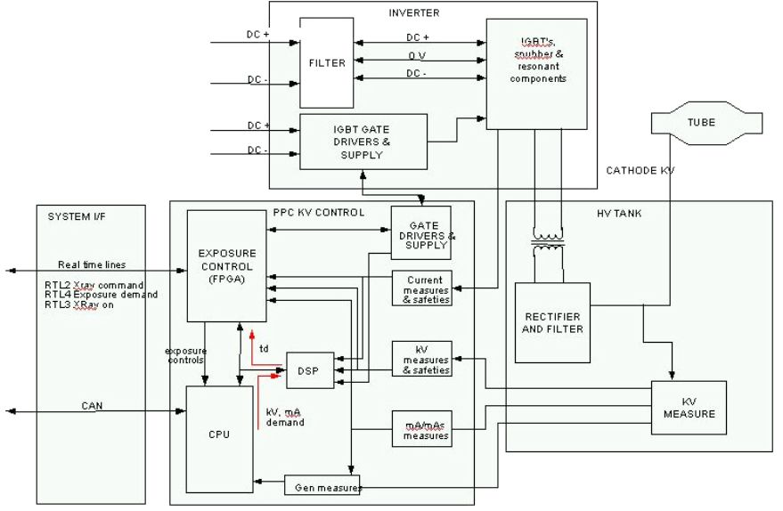

Operating Documentation
Direction 5193574-800, Rev# 22
LightSpeed 7.X Service Methods
Module Version 4.0, Version Date 2/23/12
Operating Documentation |
| Last Revised: | 14 November 2011 |
This module contains the following information:
- Introduction
- kV Function
- mA Function
- Rotation Function
- Thermal Management
- Power-On
The X-Ray generation subsystem is based on the “Jedi” platform. Jedi is an engineering name given to a family of compact high frequency X-Ray generators. This generator family covers a wide range of applications from mobile equipment RAD/RF up to this state-of-the-art CT system. The X-Ray generator in this system is capable of operating at a peak power of 100kW. This X-Ray generation subsystem is a mono-polar design requiring only one High Voltage Transformer to deliver kV to the X-Ray tube. In this case, the anode is grounded. Thus it follows that there is only one High Voltage Cable.
The Jedi-Smart Cathode (JEDI-SC) high voltage generator is intended to be used in association with the Perseus mono-polar/monofilament X-ray tube, delivering image quality enhancements and higher spatial resolution. To ensure clinical performance the JEDI-SC is designed to supply the Perseus tube with independent X (Width) and Z (Length) direction focal spot size control, as well as dynamic and static in-plane (X-axis) focal spot position control.
The Perseus tube Smart cathode hardware high level description is given in Illustration 1 below. It is composed of:
A new D-shape filament
Two (2) “Length” Electrodes: Bias voltage applied simultaneously to these electrodes (negative vs. common voltage) will define the length (Z-axis) of the focal spot. These two electrodes are electronically connected together and considered, from JEDI-SC side, as “one” and “unique” output electrode, supplied with a unique power supply.
Two (2) “Deflector (Width)” Electrodes : Bias voltage applied simultaneously to these electrodes (negative vs. filament common voltage) will define the width (X-axis) of the focal spot. Deflection voltage (Differential voltage) applied between these electrodes will define the position of the focal spot. (X-axis)
One “Focus” Electrode: Bias voltage applied to this electrode (negative vs. filament common voltage) will define, with the Bias voltage applied to the Deflector Electrodes, the width (X-axis) of the focal spot.
In the case no deflection voltage is applied between the Deflector electrodes, the Focal Spot on the anode will be in the “Center” position. Applying differential voltage, positive or negative, between the Deflector electrodes will shift the Focal Spot position to one side or to another side (“Right” or “Left”) of the “Center” position.
Illustration 1: Perseus tube

The JEDI-SC is composed of three modules: Inverter, Rotor Control Board, and HV-Tank. A block diagram of the JEDI-SC is shown in Illustration 2.
The INVERTER includes power components, the PPC-kV Ctrl board and the CT-IF Board. It has two supply inputs: NGPDU DC-bus for HV Power and 48V DC input for control and low power functions (control electronics, cooling fans). The inverter ensures communication with the system for High voltage exposure generation and control (CAN and RTL).
The ROTOR CONTROL BOARD interfaces with the inverter through a CAN bus and power cable, and delivers rotation power to the tube's stator.
The HV TANK ensures High Voltage (and power) delivery to the tube as well as filament current control and Smart Cathode electrode voltages control. The tank contains HV generation parts, the SC_KV_Meas board, the SC-Supply board, and the SC-Drive board. Two HV-insulated transformers for power transfer and bidirectional communication between Low Voltage and High Voltage modules are embedded inside the HV-tank, along with rectifiers, damping resistors, etc. The SC_KV_Meas board acts as a physical interface between the interior and the exterior of the tank. It has no intelligence, but all connections to the supply board pass through it. The SC-Supply board is connected to the high voltage common and generates filament current as well as all Bias and deflection voltages needed for Perseus tube to control focal spot size and position as requested by the system. The SC-Drive board provides power and communication interfaces to the SC-Supply board through the SC_KV_Meas board and an HV transformer. This board interfaces with the system via two channels:
A communication channel for deflection focal spot position request transfer from the system to the SC-Supply and for the analog kV, analog mA and focal spot position feedback from the HV-tank to the system, and
A +48V DC channel for power transfer to the supply board.
The tank has 5 interfaces: a flat power cable interface with the inverter, an internal CAN cable for interface with the inverter, a communication cable with the system, a 48V Power cable interface with the system, and an HV-cable interface with the X-Ray tube.
Illustration 2: JEDI-SC

The PPC control board controls the kV function.
After power on, the CPU downloads the exposure control configuration.
The FPGA then:
configures the real-time lines to the ORP
drives the inverter gate drive supply to provide the right voltage for the IGBT gates
monitors the DC bus voltage
monitors the IGBT gates voltage
A block diagram of the kV function is shown in Illustration 3.
Illustration 3: kV Function

The CPU receives the kV, mA, exposure time commands from the ORP. When the CPU receives the exposure enable signal it drives the filament drive and starts anode rotation and prepares the generator for exposure. Once all functions are ready, the CPU informs the exposure control firmware that the generator is ready for an exposure.
When exposure command goes active:
the CPU:
starts the exposure time counter
starts the mAs and brightness counters (for RAD AEC cut-off, not used in CT)
measures kV demand, kV measure, DC bus, gate voltage, HV tank temperature each 16ms during the exposure
calculates new kV, mA reference in RAD tomography or ABC
applies new kV, mA reference if the system/operator changes the parameters
the FPGA:
starts the HV power inverter by driving the IGBTs
put X-ray on in its active state
regulates the inverter
monitors the hardware safeties: tube spits, no kV, over kV, HV inverter over current, kV regulation error
When any of the following occur:
exposure command goes down
exposure enable goes down
a fatal safety error occurs
a timer reaches its final count:
the FPGA:
stops the inverter
puts X-ray on in its inactive state
the CPU:
stores tube spit count, exposure count, exposure parameters
computes the generator thermal status
If a Tube Spit Error occurs during the exposure the FPGA stops the inverter for 100us and informs the CPU which then reads and stores the error and calculates if the max number of spits is reached. If the max number of spits is not reached, the generator allows the system to continue scanning.
If a Hardware Safety Error occurs during the exposure the FPGA stops the exposure and reports the error to the CPU which then reports the error to the host computer. When a measurement goes out of range, the CPU stops the exposure and reports the error to the system.
The PPC control board's CPU in conjunction with the tank’s SC-Drive board and SC-Supply boards control the mA function. After power on, the CPU sends a preheat command to the tank.
First the CPU receives the kV, mA and exposure time commands from the SCORP. When the CPU receives the exposure enable signal, it calculates the acquisition filament drive to apply to the filament in order to match the required tube mA.
This calculation is based on:
the filament drive values stored in the tube database
interpolation for calculating the filament drive for the (kV, mA) point selected
the filament aging correction
Then it either:
calculates a boost command to apply to the filament to accelerate the filament temperature rise and sends it to the heater board. In this case, the boost duration is up to 400ms and is followed by a “go” command sent to the tank.
or does not use any boost command and directly sends a “go” command to the tank.
When the exposure command goes active, the CPU:
starts the exposure
measures the mA every 1ms (beginning 5ms after exposure starts), compares it to the mA demand and continuously calculates the filament drive to apply to reach the mA demand
sends every 1ms, the new filament drive to the heater function
updates the mA demand if required by the system or by generator algorithm (ABC mode, falling load mode, variable mA mode)
checks mA accuracy
The tank:
receives the filament drive demand each 1ms as sent from the CPU
measures the heater inverter RMS current two times per 1ms, compares it to the filament drive demand and applies the inverter frequency to reach the right filament drive current
checks heater inverter RMS current to avoid exceeding the max filament temperature
sends each 100ms the inverter RMS current measure to the PPC board's CPU
When the exposure command goes to the inactive state, the CPU either stays with the last filament drive demand, goes into preheat mode or stops the filament drive to allow a fast filament cooling before going into preheat. This rule depends on the application.
The PPC control board's CPU in conjunction with the Rotor Control Board controls the X-Ray tube's anode rotation.
When the CPU receives the exposure enable signal it sends the anode speed reference to the rotor control board.
Upon receiving this command, the rotation drive:
compares this reference to the present anode speed. If the present speed is lower:
gets from the tube database the current required to accelerate the anode and the acceleration time to apply
drives the inverter with the frequency required for the speed selected
measures the phase currents, compares them to the current demand, and applies the modulation rate to supply the proper stator current
counts the acceleration time
monitors rotation safeties
sends back each 100ms the speed to the PPC control board CPU
The speed feedback is used by the PPC control CPU to authorize the exposure
Once the acceleration time is complete, the rotation drive applies the inverter current required to maintain anode speed.
When the exposure command goes to its inactive state, the CPU either:
sends a speed=0 command to the rotation to stop the anode rotation
applies a “hold” time to maintain the anode rotation speed before stopping it
applies a “hold” time to maintain the anode rotation speed before going to a low speed mode
depending on the application.
Illustration 4: Rotation Function

The host computer controls the thermal management of the X-Ray Generation subsystem. It uses an algorithmic predictive approach to ensure that the system is capable of completing all scans necessary for a given prescription. The generator provides protection of components.
As a result of having separate heat exchanger and X-Ray tube units, the possibility that the amount of coolant present in the system can change over time. For example, consider the case of removing a tube while it is very hot. The temperature of the tube forces the coolant to expand and thus forcing fluid out of the tube. The volume of the heat exchanger is fixed, as it cannot allow air in its chamber. Thus there is an overflow bellows located on the heat exchanger. When the new tube is added to the system, it arrives with its original factory specified amount of oil, which means that the oil contained in the overflow bellows is now extra oil. Therefore we must ensure that the oil level is periodically checked and appropriate measures are taken if needed.
The heat exchanger detects an over-pressure or tube over-temperature and under-temperature states using switches. The over-pressure switch is located on the heat exchanger unit, while the tube temperature switch is located on the X-Ray tube and plugs into the Heat Exchanger's Power Interface board. The feedback from these sensors is sent to the JEDI Inverter via the CAN cable from the Power Interface board.
It is also possible, though not required, for X-Ray tubes to have a fluid bleeder to protect itself from overpressure. Fluid lost due to this is generally minimal.
The PPC control board measures the temperature of the tank and the inverter. The inverter temperature inputs are a parallel inductor temperature sensor, and a temperature sensor on the DC Discharge board. Tank temperature feedback is obtained through a sensor in the tank oil and sent to the PPC board via the tank's kV measure board..
At power-up the Power PC performs its own initialization, checks its memory integrity (checksum of program and NVRAM) and starts the communication with its peripherals as well as the system. Communication is permanently checked afterwards. It then initializes the Rotor Control board and Drive and Supply boards in HV Tank with their respective database parameters and loads PPC control board's FPGA. During power-on, the Drive board, the Supply board, and the Rotor Control board CPUs are initialized and checked their memory integrity and hardware. If a problem is encountered, a Power and Reset Diagnostics (PRD) error is reported to the PPC board. Eight LED’s (DS17 through DS24) on the PPC control board show software status and/or error conditions. More information is contained in the Troubleshooting section.
Generator power on starts when input phases are applied to the generator. In the case of a CT system, this is any time 48V is applied to the gantry, hence power is applied to the CT Interface board and the Drive board. The CT Interface board starts providing the +15V/-15V bus. The +15V rise triggers the 5V rise on the PPC control board and rotor control boards. The PPC CTRL board then sends the signal to the CT Interface board and Drive board to activate the other outputs (48V for fans, etc.).
At this stage, many actions take place in parallel:
PPC Control Board
software starts running the PRDs (1s)
software downloads the control FPGA which starts regulating the inverter gate drivers supply
PPC CTRL board software downloads the DSP
software checks the hardware configuration:
reads inverter identification
reads HV tank identification (Drive, kV measure and Supply boards)
reads CT system interface identification
talks via Control Bus to identify that all functions are present
The software monitor the DC Bus pre load and full load of the low voltage power supply. The sequence is the following:
Check that the DC Voltage value=0
Monitor pre-load relay on ACDC board during 15 seconds
Check DC Bus voltage over 400V
Check the DC Bus voltage over 450VDC min and under 850VDC max
Errors are reported if something is wrong
Rotor Control Board:
micro-controller starts running the PRDs (in case of error, LED ST0/ST1 flashes)
then goes to idle state
gates drive supply reaches its final value
DC Bus reaches its final value
Inverter:
DC Bus reaches its final value on inverter LC and on gate drive supply
Once each main function is alive the control firmware:
checks the generator configuration consistency (in case of error, error message is sent)
installs the right hardware drivers
talks to the system or the console (in the case where the generator cannot find system presence, PPC boardLEDs DS17-DS24 display an error code)
configures the final control FPGA
sends to rotation and heater databases to respective circuit boards based on the knowledge of the tube selected
At this level, if no error has been detected, the generator is ready to drive exposures.